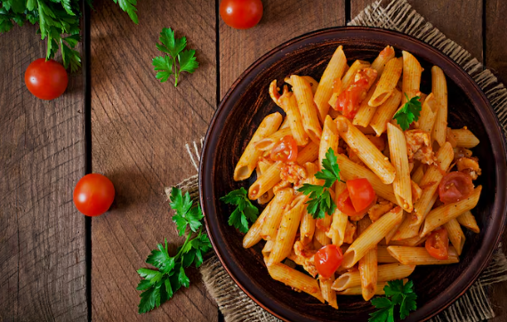

PASTA SUNSHINE
A fresh and vibrant penne pasta dish tossed with blistered tomatoes, fragrant garlic, and plenty of fresh parsley in a light olive oil sauce.
Preparation Time
- Prep Time: 10 minutes
- Cook Time: 15 minutes
- Prep Time: 25 minutes
- Servings: 4
Ingredients
- Pasta: 400g Penne Pasta
- Tomatoes: 4-5 large fresh tomatoes, halved
- Base: 2 tbsp tomato paste
- Flavor Base: 3 garlic, 1 large onion, 1 tsp fresh ginger, thinly sliced or minced
- Heat: 1 scotch bonnet pepper, finely chopped
- Seasoning: 1 Onga or Maggi, 1 tsp curry powder, salt to taste
- Oil: 3-4 tbsp vegetable Oil
- Herbs: Fresh celery leaves for garnish
Instructions
- Boil the Pasta: Bring a pot of water to a boil, add a pinch of salt, and cook the penne until al dente. Drain the pasta, but keep a little of the pasta water on the side.
- Prepare the Stew Base: Heat the vegetable oil in a large saucepan or skillet over medium heat. Add the chopped onions and sauté until translucent. Stir in the garlic, ginger, and Scotch bonnet pepper, cooking for another minute until fragrant.
- Build the Sauce: Add the tomato paste to the oil and fry it for 3-4 minutes this removes the raw taste. Stir in the chopped fresh tomatoes and the curry powder/spices. Let it simmer until the tomatoes soften into a thick, rich sauce.
- Season: Crumble in your bouillon cube and add salt to taste. If the sauce is too thick, add a small splash of your reserved pasta water to loosen it up.
- Combine: Add the cooked penne into the sauce and toss thoroughly until every strand is coated in the tomato mixture.
- Serve: Turn off the heat and garnish with fresh chopped parsley or celery leaves. Serve hot.
Estimated Nutrition
| Calories | 410kcal |
| Carbohydrates | 68g |
| protein | 13g |
| Fat | 11g |
| Fiber | 4g |